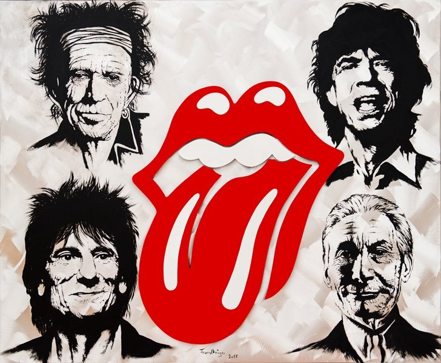

The Rolling Stones
The Rolling Stones are an English rock band formed in London in 1962. As a diverging act to the popular pop rock of the early 1960s, the Rolling Stones pioneered the gritty, heavier-driven sound that came to define hard rock.[1] The band's first stable line-up consisted of bandleader Brian Jones (guitar, harmonica, keyboards), Mick Jagger (lead vocals, harmonica), Keith Richards (guitar, vocals), Bill Wyman (bass guitar), Charlie Watts (drums), and Ian Stewart (piano), the last of whom was removed from the official line-up in 1963, but continued to work with the band as a contracted musician until his death in 1985. The band's primary songwriters, the partnership of Jagger and Richards, assumed leadership after Andrew Loog Oldham became the group's manager. Jones left the band less than a month before his death in 1969, having already been replaced by Mick Taylor, who in turn left in 1974 and was replaced in 1975 by Ronnie Wood, who has since remained. Since Wyman's departure in 1993, Darryl Jones has served as bassist. The Stones have not had an official keyboardist since Stewart's departure in 1963, but have employed several additional musicians in that role, including Jack Nitzsche (1965–71), Nicky Hopkins (1967–82), Billy Preston (1971–81), Ian McLagan (1978–81), and Chuck Leavell (1982–present).
Rooted in blues and early rock and roll, the Rolling Stones started out playing covers and established themselves at the forefront of the British Invasion of bands that became popular in the United States in 1964, also being identified with the youthful and rebellious counterculture of the 1960s. The band found more success with their own material; songs such as "(I Can't Get No) Satisfaction" and "Paint It Black" became international hits, and Aftermath (1966) – their first entirely original album – has been considered the most important of the band's formative records.[2] After a short period of experimentation with psychedelic rock in the mid-1960s, the Stones returned to their 'bluesy' roots with Beggars Banquet (1968), Let It Bleed (1969), Sticky Fingers (1971) and Exile on Main St. (1972). In 1969 they were first introduced on stage as 'The Greatest Rock and Roll Band in the World'.
The band continued to release commercially successful albums through the 1970s and early 1980s, including Some Girls (1978) and Tattoo You (1981), the two best-sellers in their discography. During the 1980s, infighting curtailed their output; as a result, they only released two more under-performing albums, and did not tour for the rest of the decade. Their fortunes changed at the end of the decade, when they released Steel Wheels (1989), promoted by a large stadium and arena tour, the Steel Wheels/Urban Jungle Tour. Since the 1990s, new material has been less frequent. Despite this, the Rolling Stones continue to be a huge attraction on the live circuit. By 2007, the band had four of the top five highest-grossing concert tours of all time: Voodoo Lounge Tour (1994–95), Bridges to Babylon Tour (1997–98), Licks Tour (2002–03) and A Bigger Bang (2005–07).[3] In 2012, the band celebrated their 50th anniversary. Their latest album, Blue & Lonesome (2016), became their twelfth UK number-one album. The group continues to sell out venues, with their recent No Filter Tour running for two years and concluding in August 2019.
The Rolling Stones' estimated record sales of 240 million makes them one of the best-selling music artists of all time. The band have been awarded three Grammy Awards and a Grammy Lifetime Achievement Award. They were inducted into the Rock and Roll Hall of Fame in 1989 and the UK Music Hall of Fame in 2004. They have released 30 studio albums, 23 live albums and numerous compilations. Let It Bleed (1969) marked the first of five consecutive No. 1 studio and live albums in the UK. Sticky Fingers (1971) was the first of eight consecutive No. 1 studio albums in the US. In 2008, the Stones were listed 10th on the Billboard Hot 100 All-Time Top Artists chart, and in 2019 Billboard magazine ranked them second in their list of the "Greatest Artists of All Time" based on US chart success.
Discografia
- The Rolling Stones / England's Newest Hit Makers (1964)
- 12 X 5 (1964)
- The Rolling Stones No. 2 (1965)
- The Rolling Stones, Now! (1965)
- Out of Our Heads (1965)
- December's Children (And Everybody's) (1965)
- Aftermath (1966)